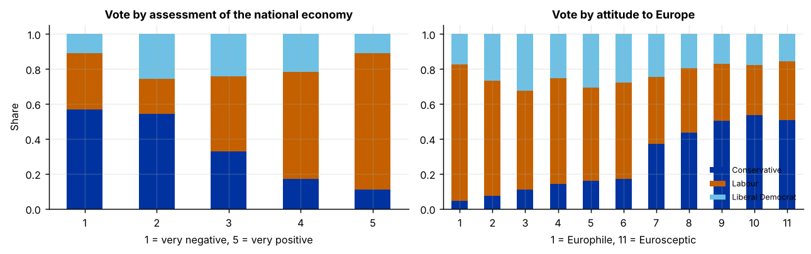
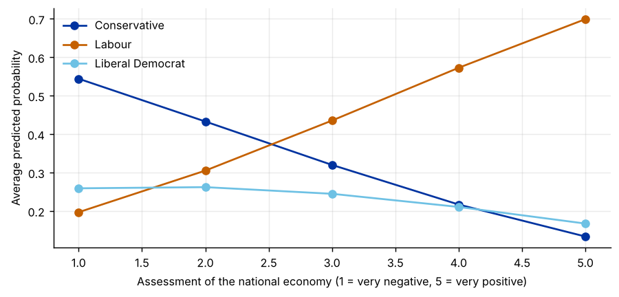

Run this model on your own data in Open Econometric Systems →
Step 1The question and the model
What makes a British voter in 1997 choose Labour or the Liberal Democrats rather than the Conservatives? The multinomial logit gives each of the \(J\) categories a linear index and sets the probability of category \(j\) to
The coefficients \(\beta_j\) of the other \(J-1\) equations compare category \(j\) with the base. The data have one outcome and six regressors.
| Variable in the file | Definition |
|---|---|
vote |
0 = Conservative (base), 1 = Labour, 2 = Liberal Democrat |
age |
age in years |
econ_national, econ_household |
assessment of the national and the household economy, 1 (very negative) to 5 (very positive) |
europe |
Euroscepticism on an 11-point scale: high scores are Eurosceptic, low scores Europhile |
political_knowledge |
knowledge of party positions, 0 to 3 |
female |
1 for women |
Before you estimate anything
- Is the outcome unordered? If the categories have a meaningful order, an ordered model uses it and needs fewer parameters.
- Does every category have enough observations? Each category needs at least about 10 observations per regressor. Merge sparse categories.
- Are the categories really distinct alternatives? The multinomial logit assumes that adding or removing a category does not change the relative odds of the others (IIA, Step 7). Close substitutes violate it.
How to write it: model section
We model the vote as a choice among three parties with a multinomial logit estimated by maximum likelihood, with the Conservatives as the base category. The explanatory variables are age, the assessments of the national and the household economy, attitude to European integration, political knowledge and gender. Because the coefficients compare each party with the base, we report relative risk ratios and the average marginal effects on the probability of voting for each party.
Step 2Load the data and look at it first
import warnings; warnings.filterwarnings("ignore")
import numpy as np, pandas as pd
import matplotlib.pyplot as plt
import statsmodels.api as sm
from scipy import stats
d = pd.read_csv("beps.csv")
X = d[["age", "econ_national", "econ_household", "europe", "political_knowledge", "female"]]
party = {0: "Conservative", 1: "Labour", 2: "Liberal Democrat"}
print(f"{len(d)} voters")
print(d.vote.map(party).value_counts().rename("voters").to_frame().assign(share=lambda t: (t.voters / len(d)).round(3)))
print("\nMean of each regressor, by party")
print(X.groupby(d.vote.map(party)).mean().round(2).T)
fig, ax = plt.subplots(1, 2, figsize=(10, 3.2))
pd.crosstab(d.econ_national, d.vote.map(party), normalize="index")[list(party.values())].plot(kind="bar", stacked=True, ax=ax[0], color=["#0033a0", "#c46000", "#6ec1e4"], rot=0, legend=False)
ax[0].set_title("Vote by assessment of the national economy"); ax[0].set_xlabel("1 = very negative, 5 = very positive"); ax[0].set_ylabel("Share")
pd.crosstab(d.europe, d.vote.map(party), normalize="index")[list(party.values())].plot(kind="bar", stacked=True, ax=ax[1], color=["#0033a0", "#c46000", "#6ec1e4"], rot=0)
ax[1].set_title("Vote by attitude to Europe"); ax[1].set_xlabel("1 = Europhile, 11 = Eurosceptic"); ax[1].legend(frameon=False, fontsize=7)
plt.tight_layout()1525 voters
voters share
vote
Labour 720 0.472
Conservative 462 0.303
Liberal Democrat 343 0.225
Mean of each regressor, by party
vote Conservative Labour Liberal Democrat
age 56.87 53.00 53.03
econ_national 2.84 3.54 3.18
econ_household 2.89 3.34 3.05
europe 8.66 5.77 6.15
political_knowledge 1.72 1.37 1.67
female 0.56 0.52 0.53
How to read it
Labour is the largest party in the sample (47%), then the Conservatives (30%) and the Liberal Democrats (22%). The pattern in the raw data is clear: voters who think the national economy is doing well are far more likely to vote Labour, the party in opposition that year, while Euroscepticism is concentrated among Conservative voters. The model asks how much of each pattern survives once the other regressors are controlled.
Step 3Why not several binary logits?
# one binary logit for each party against all others: probabilities do not add up to one
Xc = sm.add_constant(X)
p_sep = np.column_stack([sm.Logit((d.vote == j).astype(int), Xc).fit(disp=0).predict(Xc) for j in (0, 1, 2)])
print("Sum of the three separate predicted probabilities: min %.3f, mean %.3f, max %.3f" % (p_sep.sum(1).min(), p_sep.sum(1).mean(), p_sep.sum(1).max()))
mn = sm.MNLogit(d.vote, Xc).fit(disp=0)
print("Sum of the multinomial predicted probabilities: always", np.unique(mn.predict(Xc).sum(1).round(6)))Sum of the three separate predicted probabilities: min 0.906, mean 1.000, max 1.243 Sum of the multinomial predicted probabilities: always [1.]
How to read it
Three separate binary logits give probabilities that do not add up to one (the output shows the sums). The multinomial logit estimates the three probabilities jointly, so they sum to one, and it is more efficient. The binary logits remain useful as a robustness check, but not as the model.
Step 4The multinomial logit
mn = sm.MNLogit(d.vote, Xc).fit(disp=0)
B = mn.params; SE = mn.bse
for j, lab in [(1, "Labour"), (2, "Liberal Democrat")]:
t = pd.DataFrame({"coef": B[j - 1], "std err": SE[j - 1], "z": B[j - 1] / SE[j - 1]})
t["p-value"] = 2 * stats.norm.sf(abs(t.z))
print(f"{lab} against Conservative"); print(t.round(4).to_string()); print()
n_by = d.vote.value_counts().sort_index().values
ll0 = float((n_by * np.log(n_by / len(d))).sum())
lr = 2 * (mn.llf - ll0)
print(f"Log-likelihood = {mn.llf:.3f}; LR test of all slopes zero: chi2(12) = {lr:.1f}, p = {stats.chi2.sf(lr, 12):.2e}; McFadden pseudo R2 = {1 - mn.llf / ll0:.3f}")Labour against Conservative
coef std err z p-value
const 1.0927 0.4689 2.3304 0.0198
age -0.0158 0.0046 -3.4613 0.0005
econ_national 0.8085 0.0894 9.0478 0.0000
econ_household 0.2547 0.0804 3.1659 0.0015
europe -0.3137 0.0244 -12.8609 0.0000
political_knowledge -0.5279 0.0688 -7.6736 0.0000
female -0.1563 0.1421 -1.0999 0.2714
Liberal Democrat against Conservative
coef std err z p-value
const 1.7240 0.5072 3.3994 0.0007
age -0.0132 0.0050 -2.6404 0.0083
econ_national 0.3452 0.0950 3.6346 0.0003
econ_household 0.0251 0.0869 0.2883 0.7731
europe -0.2680 0.0262 -10.2124 0.0000
political_knowledge -0.2203 0.0759 -2.9042 0.0037
female -0.0776 0.1550 -0.5008 0.6165
Log-likelihood = -1365.452; LR test of all slopes zero: chi2(12) = 476.8, p = 1.94e-94; McFadden pseudo R2 = 0.149How to read it
Each block compares one party with the Conservatives. Voters who see the national economy more positively are more likely to vote Labour (0.81, z = 9.0) and, less strongly, Liberal Democrat (0.35, z = 3.6) than Conservative. Each point more Eurosceptic lowers the odds of voting Labour (−0.31, z = −12.9) and Liberal Democrat (−0.27) relative to Conservative, that is, Euroscepticism is a Conservative marker. Political knowledge lowers both (−0.53 and −0.22), and age lowers both slightly. The household economy matters for Labour (0.25, z = 3.2) but not for the Liberal Democrats (0.03), and gender matters for neither. The model is strongly better than the category frequencies (chi-squared 476.8 on 12 degrees of freedom), with a pseudo R-squared of 0.15.
Step 5Relative risk ratios
rrr = pd.concat({"Labour vs Con": np.exp(B[0]), "Lib Dem vs Con": np.exp(B[1])}, axis=1).drop("const")
rrr_lo = pd.concat({"Labour vs Con": np.exp(B[0] - 1.96 * SE[0]), "Lib Dem vs Con": np.exp(B[1] - 1.96 * SE[1])}, axis=1).drop("const")
rrr_hi = pd.concat({"Labour vs Con": np.exp(B[0] + 1.96 * SE[0]), "Lib Dem vs Con": np.exp(B[1] + 1.96 * SE[1])}, axis=1).drop("const")
print("Relative risk ratios (exp of the coefficient)"); print(rrr.round(3).to_string())
print("\n95% confidence interval, Labour vs Conservative"); print(pd.DataFrame({"low": rrr_lo["Labour vs Con"], "high": rrr_hi["Labour vs Con"]}).round(3).to_string())Relative risk ratios (exp of the coefficient)
Labour vs Con Lib Dem vs Con
age 0.984 0.987
econ_national 2.245 1.412
econ_household 1.290 1.025
europe 0.731 0.765
political_knowledge 0.590 0.802
female 0.855 0.925
95% confidence interval, Labour vs Conservative
low high
age 0.976 0.993
econ_national 1.884 2.674
econ_household 1.102 1.510
europe 0.697 0.767
political_knowledge 0.515 0.675
female 0.647 1.130How to read it
A relative risk ratio is the factor by which the probability of a party relative to the base changes when the regressor rises by one unit. Each step up in the assessment of the national economy multiplies the relative probability of voting Labour rather than Conservative by 2.24 (95% interval 1.88 to 2.67), and of voting Liberal Democrat by 1.41. A ratio above one favours the party over the base, below one the base. Relative risk ratios compare two parties and say nothing about the third, so they are not changes in probability: for that use the marginal effects.
Step 6Marginal effects on every category
Xn = Xc.to_numpy(float); Bm = B.to_numpy(float)
def P(M, Bm=Bm):
z = np.column_stack([np.zeros(len(M)), M @ Bm]); e = np.exp(z); return e / e.sum(1, keepdims=True)
# continuous regressors: derivative p_j (b_jk - sum_m p_m b_mk), averaged over voters; dummy: discrete change 0 to 1
rows = {}
for i, v in enumerate(X.columns, start=1):
if v == "female":
X1, X0 = Xn.copy(), Xn.copy(); X1[:, i], X0[:, i] = 1, 0
rows[v] = (P(X1) - P(X0)).mean(0)
else:
pr = P(Xn); slope = np.column_stack([np.zeros(len(Xn)), np.full(len(Xn), Bm[i, 0]), np.full(len(Xn), Bm[i, 1])])
rows[v] = (pr * (slope - (pr * slope).sum(1, keepdims=True))).mean(0)
ame = pd.DataFrame(rows, index=["Conservative", "Labour", "Liberal Democrat"]).T
print("Average marginal effects on the probability of each party"); print(ame.round(3).to_string())
print("\nRows add to zero:", ame.sum(1).round(6).abs().max() < 1e-6)
fig, ax = plt.subplots(figsize=(7, 3.4))
grid = np.arange(1, 6)
for j, (lab, c) in enumerate(zip(["Conservative", "Labour", "Liberal Democrat"], ["#0033a0", "#c46000", "#6ec1e4"])):
ys = []
for g in grid:
M = Xn.copy(); M[:, 2] = g; ys.append(P(M).mean(0)[j])
ax.plot(grid, ys, marker="o", color=c, label=lab)
ax.set_xlabel("Assessment of the national economy (1 = very negative, 5 = very positive)"); ax.set_ylabel("Average predicted probability"); ax.legend(frameon=False)
plt.tight_layout()Average marginal effects on the probability of each party
Conservative Labour Liberal Democrat
age 0.002 -0.002 -0.001
econ_national -0.099 0.126 -0.027
econ_household -0.026 0.049 -0.023
europe 0.047 -0.035 -0.012
political_knowledge 0.064 -0.083 0.019
female 0.020 -0.023 0.003
Rows add to zero: True
How to read it
One step up in the assessment of the national economy raises the probability of a Labour vote by 0.126, lowers the Conservative probability by 0.099 and the Liberal Democrat probability by 0.027: the three effects add to zero. The figure shows what that means over the whole scale. Notice that the effect on the third party is not simply the sign of its own coefficient: the Liberal Democrat coefficient is positive against the Conservatives (0.35), yet the Liberal Democrat probability falls, because voters move even more strongly to Labour. This is why marginal effects, not coefficients, are what to report for a multinomial model.
How to write it: main result
Voters who assess the national economy more favourably are markedly more likely to vote Labour: one more step on the five-point scale raises the probability of a Labour vote by 12.6 percentage points (standard error 1.4) and lowers the probability of a Conservative vote by 9.9 points (standard error 1.2), with a smaller fall for the Liberal Democrats (2.7 points). Relative to the Conservatives, the relative risk ratio of voting Labour is 2.24 (95% confidence interval 1.88 to 2.67).
Step 7Classification and the independence of irrelevant alternatives
pred = mn.predict(Xc).values.argmax(1)
conf = pd.crosstab(d.vote.map(party).rename("actual"), pd.Series(pred, name="predicted").map(party))
print(conf)
print(f"\nCorrectly classified = {(pred == d.vote.values).mean():.3f}; always predicting Labour = {d.vote.value_counts(normalize=True).max():.3f}")
print("Share of each party predicted correctly:", {party[j]: round(((pred == j) & (d.vote == j)).sum() / (d.vote == j).sum(), 3) for j in (0, 1, 2)})
# Hausman-McFadden test of IIA: drop one category and compare the remaining coefficients
def hmf(drop):
keep = [c for c in (0, 1, 2) if c != drop]; m = d.vote.isin(keep)
y2 = d.vote[m].map({c: i for i, c in enumerate(keep)})
r = sm.MNLogit(y2, Xc[m]).fit(disp=0)
eq_full = [c - 1 for c in keep if c != 0]
idx = np.concatenate([np.arange(e * 7, (e + 1) * 7) for e in eq_full])
diff = r.params.values.T.ravel() - mn.params.values.T.ravel()[idx]
Vd = r.cov_params().values - mn.cov_params().values[np.ix_(idx, idx)]
return diff @ np.linalg.pinv(Vd) @ diff
for drop in (1, 2):
print(f"Hausman-McFadden statistic with {party[drop]} dropped: {hmf(drop):.2f}")predicted Conservative Labour Liberal Democrat
actual
Conservative 305 154 3
Labour 112 598 10
Liberal Democrat 93 237 13
Correctly classified = 0.601; always predicting Labour = 0.472
Share of each party predicted correctly: {'Conservative': np.float64(0.66), 'Labour': np.float64(0.831), 'Liberal Democrat': np.float64(0.038)}
Hausman-McFadden statistic with Labour dropped: -2.69
Hausman-McFadden statistic with Liberal Democrat dropped: -0.03How to read it
The model classifies 60% of voters correctly against 47% for always predicting Labour, so it improves on the benchmark. But look at the pattern: 66% of Conservative and 83% of Labour voters are predicted correctly, and only 4% of Liberal Democrat voters. The model rarely predicts the smallest party, which is common: the highest probability is seldom the third party even when its probability is substantial. Judge a multinomial model by its probabilities and marginal effects, not by the classification rate alone. The Hausman-McFadden test of independence of irrelevant alternatives gives negative statistics here, a known failure of the test in finite samples, which means it cannot be used as evidence either way. The practical question is whether Labour and the Liberal Democrats are close substitutes whose relative odds would change if one of them were absent, which a multinomial probit or a nested logit allows.
Step 8Robustness: the choice of base category
d2 = d.assign(v2=d.vote.map({1: 0, 0: 1, 2: 2})) # Labour as the base
mn2 = sm.MNLogit(d2.v2, Xc).fit(disp=0)
print(f"Log-likelihood with Conservative as base = {mn.llf:.4f}; with Labour as base = {mn2.llf:.4f}")
print("\nCoefficients change with the base (Conservative vs Labour is minus Labour vs Conservative):")
print(pd.DataFrame({"Labour vs Con (base Con)": B[0], "Con vs Labour (base Labour)": mn2.params[0]}).round(4).head(4).to_string())
pr1, pr2 = mn.predict(Xc).values, mn2.predict(Xc).values[:, [1, 0, 2]]
print(f"\nLargest difference between the fitted probabilities of the two parametrisations: {np.abs(pr1 - pr2).max():.2e}")Log-likelihood with Conservative as base = -1365.4524; with Labour as base = -1365.4524
Coefficients change with the base (Conservative vs Labour is minus Labour vs Conservative):
Labour vs Con (base Con) Con vs Labour (base Labour)
const 1.0927 -1.0927
age -0.0158 0.0158
econ_national 0.8085 -0.8085
econ_household 0.2547 -0.2547
Largest difference between the fitted probabilities of the two parametrisations: 1.72e-15How to read it
Changing the base category changes the coefficients, which now compare each party with Labour, but not the fitted probabilities, the log-likelihood or the marginal effects. The coefficient of Conservative against Labour is exactly minus that of Labour against Conservative. Choose the base for convenience of interpretation, usually the largest or the natural reference category, and never conclude anything from the fact that a coefficient is significant against one base and not another.
Step 9What to report in the paper
Report the number of observations and the share in each category; the coefficient table for each equation with the base named; the relative risk ratios if your field reads them; the average marginal effects on every category; the likelihood-ratio test and pseudo R-squared; the classification table with the benchmark; and a discussion of IIA.
How to write it: results and robustness
Table 1 reports the multinomial logit estimates for 1,525 voters. The model is jointly significant (likelihood-ratio chi-squared of 476.8 with 12 degrees of freedom) with a McFadden pseudo R-squared of 0.15, and classifies 60% of voters correctly against 47% for always predicting Labour. The marginal effects sum to zero across parties by construction. Changing the base category does not alter the fitted probabilities.
Step 10Common mistakes
Mistakes to avoid
- Reading a coefficient as an effect on that category's probability. It is an effect relative to the base category, and the probability of a category can even move opposite to its own coefficient. Report marginal effects.
- Concluding from significance against one base. Change the base and the table changes. Test differences between categories directly.
- Using multinomial logit for ordered outcomes. If the categories are ordered, use the ordered model.
- Ignoring IIA. If two alternatives are close substitutes (red bus and blue bus), the model overstates the effect of removing one. Consider a nested logit or a multinomial probit.
- Judging fit by accuracy alone. A small category is almost never the most probable one for any voter, so its accuracy is low even when the model is good. Compare the average predicted shares with the observed shares.
- Too many categories for the sample. The number of parameters grows with the number of categories; merge categories with fewer than about 10 observations per regressor.
- Treating the Hausman IIA test as decisive. It is known to be unreliable and often negative.